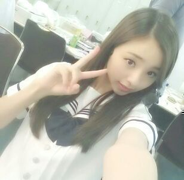
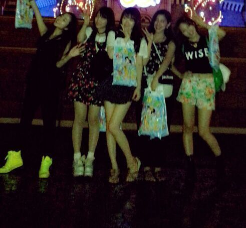
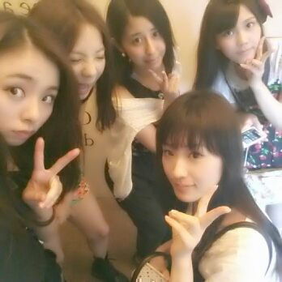

| 2013/07 23 Tue | 川村真洋 18歳になりましたーー＼(^ ∀^)／ 実感わかないね〜 ☆てへっ ろってぃー |
Hi☆ ろってぃ-、です！！

まず、
7/20 お誕生日の ゆったん様 )))
本人には 100回位言ってんけど 笑
まだblogでは言ってなかったぉ、、、
せーーのっ、
「ゆったんたん☆
20歳のお誕生日
本当におめでとーーーーう \(^o^)/」
おめでと〜 って言うたびに
「ゆったん二十歳かぁ〜」
「ゆったんももう二十歳なんかぁ〜」
ってばっか言ってしまうまひろ(・ω・)笑
皆、大人になってゆく ☆
ゆったんはねぇ〜〜、
うん、まひろ ゆったんのこと
大好きやでww (/・ω・)/
ゆったんを見つけると
特に用がなくても、
何か話かけたくなるねん,
いつも、なに話しても
ゆったん楽しく返してきてくれるから
嬉しゅうキモチなんよww☆☆
これからも、よろちくん。
ぴょん♪
・ ・ ・
そして そして
今日は まひろのお誕生日です\(´ω`)/

左から
まひろ、川後、かずみ、ちはる、あみ
綺麗すぎた...
シンデレラ城 ) ) )
でもこれっ
18を迎える たった数時間の
記念すべき写真だよ(>∨<)笑
今日で 18歳になりました〜〜
ワ---イ( ´∀｀)
無事 18歳になれて
良かったよ〜＼(^^)／笑
誕生日１日前に
ずー、じょー、ひな、ちずーが
夏のいい思い出を共に作ってくれた
(´；ω；｀)love love love。
ありがとーーーっ ！！！！
写真とかも他にもあるし
色々あったからまた書くー。
今日、起きてblogを開いたら
既に happy birthdayコメントが
いっぱいきてて
すっごく 嬉しかったです\(*´∨`*)/
皆さん、本当にありがとうございます。
画面を開くと
メンバーやスタッフさん 友達から
happy birthdayメールがたまってて
ビックリした。
自分の誕生日にも
皆おんなじようにまひろにも
happybirthday 大好き！とか
言ってくれるんだ...って
不思議なキモチになった(^‐^)
すっごく嬉しかった。
16歳になってすぐ乃木坂46になって
もう ２年が経ちました。
今日で18歳☆ はやいね/
まさ〜か 16歳になってから
こんな人生をおくって行くとは
思ってなかった(*^^*)
こんなに いい仲間を作って
ファンの皆さんと出会えたことも
何だか不思議であります！！
でも 18歳になって更に更に
頑張って行かなくてはならないんです！
乃木坂46とゆう
グループのメンバーの中の１人
かもしれないけど
自分には、
一瞬で人を幸せにすることができる
歌手とゆう夢があって
小さい頃から 色々あったけど
歌うことは自分の支えでありました。
11歳の頃に 小さなライブハウスで
初めて１人で歌わせてもらいました。
その時歌った曲が
誰もが知ってる
絢香さんの「三日月」とゆう曲です。
その liveが終わった後に
その日 様子を見守ってくれていた
家族、友達、
見にきてくれたお客さんの方々が
まひろのことを誉めてくれました。
「歌うまいね。」
「まひろちゃんの歌は
なんだか気持ちが伝わるねっ」って。
まだ小学５年生で
歌も全然今よりは下手っぴだった
かもしんないけど
「あの時 聞いてて 泣きそうになったよ」
とか言ってくれました。
本当に すっっごい嬉しかった。
ダンススクールに通い始めた頃、周りで 同じ年の女の子達がばりばり踊ってて、
それを見て
『まひろもあーなりたい』と
思って 練習して頑張ってました^^
そしたら ダンスの先生が
オープニングの曲でまひろを
センターにおいてくれました。
『歌とダンスだけは
自分をいきいき元気に
してくれる(о^∨^о)』 と思いました。
本当に好きなことって
一生あきないんだな、って。
こんなまひろでも
歌ったら 感動し、
笑顔になってくれたり
喜んでもらえるんだ☆
歌ってカッコイイ！！！って
思いました。
今のまひろと同じ位で
歌手デビューをした
絢香さん、 家入りレオさんみたいに
若くても あんな大勢の人の心を掴める
人になっていきたい！
大阪で一緒に ダンスしたり歌ったり
していた大好きな仲間、
あかりってぃーは
誰よりも一緒におった！
大好きやった！
今は大好きなギターを持って歌つくって
live活動頑張ってると思う！！
みちるってぃーは
ダンス一筋な子やって
一緒に踊って良きライバルやった^^
カッコイイダンサーになってると思う！
ルリは ダンスは苦手やったけど
歌は上手くて 一緒に
大阪のアメリカ村で liveしたり
ダンスの発表会でも
一緒にソロで歌わせて
もらったした(^‐^)
その時は〜
まひろは 福原美穂さんで
ルリは 浜崎あゆみさんを歌った(><)
懐かしい！！
ひろなちゃんも ナインのグループの１人。
皆も 頑張ってるから
それ以上に頑張らなくては
いけません。
18歳は いつも一緒にいる
乃木メンや乃木famの皆さんと
いっぱい思い出も作って楽しんで
ちゃんと自分のことも考えて
頑張っていきたいと思います！
本当に こんなたくさんの方に
happy birthdayを言ってもらえて
幸せです！
８月からは Zeppツアーの
リハーサルも全力で頑張っていきます！
来てくださる皆さん全員が
笑顔で帰ってもらいたいから！
これからも、よろちくです(*^^*)
本当に大好きです！

Rottyより.★